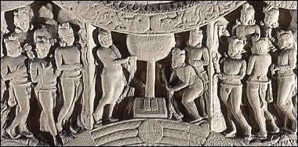

The Bodhi TreeThe tree under which Siddhartha sat when he reached Enlightenment became known as the Bodhi Tree. The Buddha is represented by the footprints and empty throne in the centre of the scene. On either side of the tree are men holding out cloth perhaps as offerings to the Buddha. |